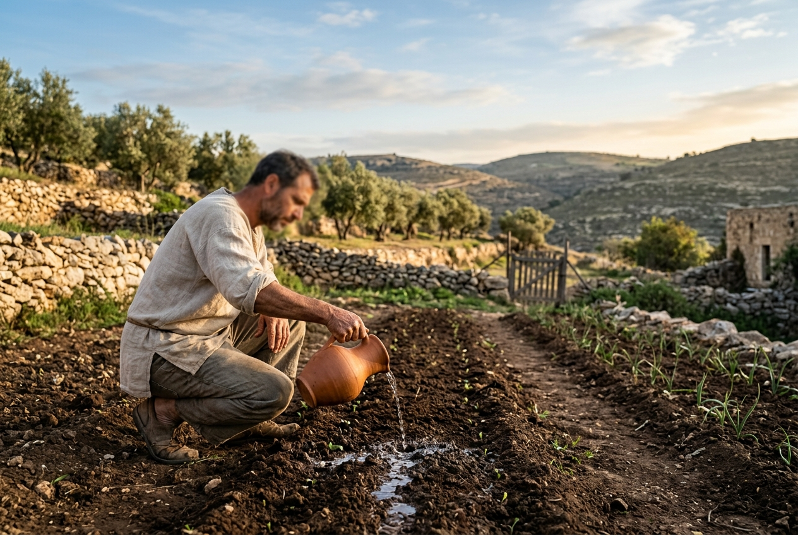
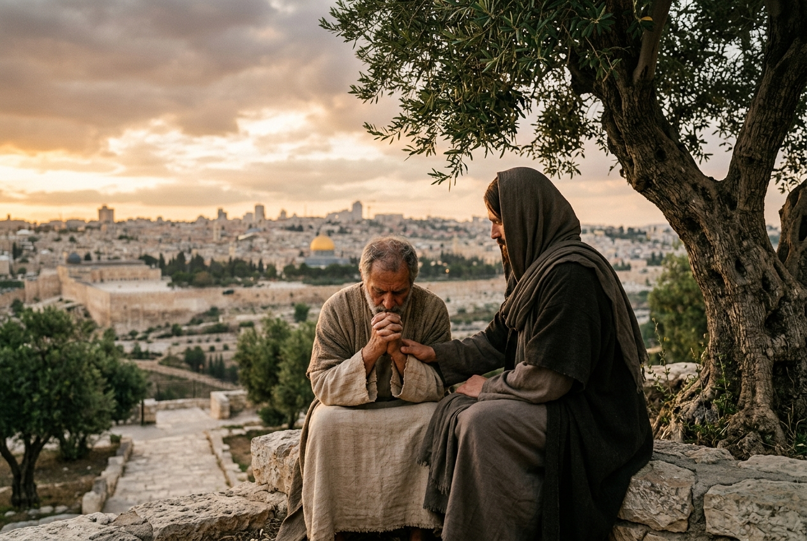
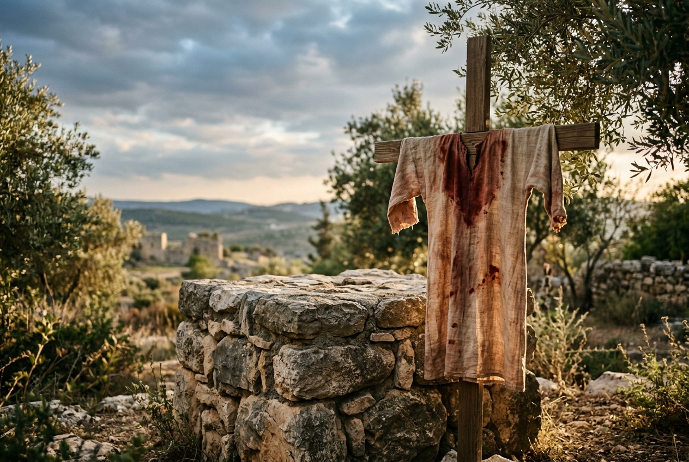

Reflexão Cristã
A Glória Silenciosa do Obreiro Escondido
Reflexão sobre Lucas, capítulo 10, versículo 20, que nos convida a buscar a glória silenciosa da salvação, valorizando o que Deus fez por nós, não nosso desempenho.
Palavra, fé e vida cristã
O Verbo Vivo reúne textos de fé, consolo e formação interior para quem procura uma leitura bíblica sensível, profunda e próxima da vida real.
Reflexão Cristã
Reflexão sobre Lucas, capítulo 10, versículo 20, que nos convida a buscar a glória silenciosa da salvação, valorizando o que Deus fez por nós, não nosso desempenho.
Reflexões recentes

Reflexão Cristã
Reflexão sobre 1 Coríntios 3:7 que destaca a soberania de Deus no crescimento espiritual, enfatizando humildade, dependência e adoração.

Reflexão Cristã
Reflexão sobre a riqueza espiritual da igreja de Esmirna em Apocalipse, destacando a fé em meio à pobreza e à perseguição.

Reflexão Cristã
Reflexão sobre a conversão segundo Lucas, capitulo 22, versículos 32 e 33: fé verdadeira nasce na fraqueza e fortalece os irmãos na comunidade cristã.

Reflexão Cristã
Descubra como a história de Jacó e Israel nos ensina a buscar consolo e oferecer sacrifícios a Deus mesmo na dor e no silêncio espiritual.
Reflexão Cristã
Reflexão sobre Salmos 28:1: o silêncio de Deus, o desespero da alma e a importância do clamor para encontrar vida e restauração na Palavra de Deus.

Reflexão Cristã
Paulo alerta contra filosofias e tradições que desviam o cristão da plenitude em Cristo. Vigilância espiritual é fundamental para manter a fé pura.

Reflexão Cristã
Paulo alerta contra filosofias e tradições humanas que afastam da verdade em Cristo, revelando forças espirituais que aprisionam o coração do crente.
Cristologia
Em Cristo habita corporalmente toda a plenitude da divindade, revelando Deus em sua totalidade para nossa fé e vida.
Cristologia
Reflexão bíblica sobre a plenitude recebida em Cristo e a segurança de viver sob sua soberania.

Reflexão Cristã
Paulo nos chama a viver a fé recebida em Cristo diariamente, numa caminhada constante de transformação, liberdade e perseverança.
Vida Cristã
Reflexão sobre Colossenses, capítulo 2, versículo 7: permanecer enraizado em Cristo, crescer em gratidão e viver uma fé firme.

Discernimento
Reflexão bíblica sobre discernimento, falsas promessas espirituais e a suficiência de Cristo diante de discursos sedutores.

Reflexão Cristã
Paulo alerta contra tradições humanas que desviam da centralidade de Cristo, convidando-nos a fundamentar nossa fé na Palavra e na obra de Jesus.

Vida Cristã
Reflexão sobre a vida cristã edificada em Cristo, com fundamentos firmes, maturidade espiritual e perseverança na Palavra.
Reflexão Bíblica
Uma reflexão bíblica sobre alegria pastoral, firmeza espiritual e maturidade cristã a partir do cuidado de Paulo pelos colossenses.

Reflexão Cristã
Reflexão sobre Mateus, capítulo 21, versículo 17: depois dos aplausos e da celebração, Jesus ainda encontra morada em nossa casa e rotina?

Reflexão Cristã
Reflexão sobre Filipenses, capítulo 2: como vencer murmurações, discussões e viver como luz em uma geração cansada de discursos vazios.

Reflexão
Entenda a intercessão como uma luta espiritual silenciosa, feita com amor, oração e perseverança diante de Deus.

Reflexão Cristã
Uma reflexão cristã sobre Provérbios, Jesus e Jeremias: por que a verdadeira desordem da vida começa no coração e como guardá-lo em Deus.

Reflexão
Paulo ensina que coração fortalecido, comunhão em amor e mente iluminada pela Palavra conduzem ao pleno conhecimento de Cristo.

Reflexão Cristã
Reflexão bíblica sobre discernimento espiritual, falsas palavras e firmeza na fé para permanecer na verdade de Cristo.
Reflexão Cristã
Uma reflexão sobre Colossenses: todos os tesouros da sabedoria e do conhecimento estão em Cristo, fonte da vida transformada.

Reflexão Cristã
O descanso não é apenas cessar do trabalho, mas um convite divino para confiar, reorientar o coração e encontrar refrigério na presença do Senhor. Inspirado no relato da criação e na oferta de Cristo, este descanso é resistência espiritual diante da cultura da produtividade incessante.
Reflexão Cristã
Em tempos de injustiça e violência desenfreada, o clamor de Habacuque nos convida a expressar nossas angústias diante de Deus, confiando que Ele permanece soberano e justo, mesmo quando a justiça humana falha.
Livro do autor
Este livro é um convite a servir aos outros em intercessão. Ou, se quiser, um manual da guerrilha em intercessão. Existe uma beleza inexplicável na vida de oração, só comparável à luz em nosso mundo natural.
A luz é invisível e intocável, mas essencial à vida. Assim também a oração é força invisível, silenciosa e poderosa.
Acessar e-book gratuitoLinha editorial
Textos preparados para edificação espiritual, consolo e reflexão.
Linguagem acessível, sem abrir mão de profundidade bíblica.
Compromisso com respeito, responsabilidade e centralidade em Cristo.
Sobre o projeto
O Verbo Vivo existe para oferecer leituras que ajudem a alma a respirar, reencontrar esperança e caminhar com Deus nos dias simples e nos dias difíceis.